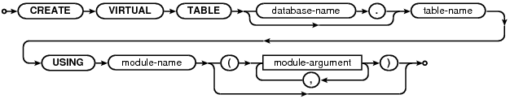

Choose any three.
|
|
SQL As Understood By SQLite
CREATE VIRTUAL TABLE
create-virtual-table-stmt:

A virtual table is an interface to an external storage or computation engine that appears to be a table but does not actually store information in the database file.
In general, you can do anything with a virtual table that can be done with an ordinary table, except that you cannot create indices or triggers on a virtual table. Some virtual table implementations might impose additional restrictions. For example, many virtual tables are read-only.
The <module-name> is the name of an object that implements the virtual table. The <module-name> must be registered with the SQLite database connection using sqlite3_create_module() or sqlite3_create_module_v2() prior to issuing the CREATE VIRTUAL TABLE statement. The module takes zero or more comma-separated arguments. The arguments can be just about any text as long as it has balanced parentheses. The argument syntax is sufficiently general that the arguments can be made to appear as column definitions in a traditional CREATE TABLE statement. SQLite passes the module arguments directly to the xCreate and xConnect methods of the module implementation without any interpretation. It is the responsibility of the module implementation to parse and interpret its own arguments.
A virtual table is destroyed using the ordinary DROP TABLE statement. There is no DROP VIRTUAL TABLE statement.